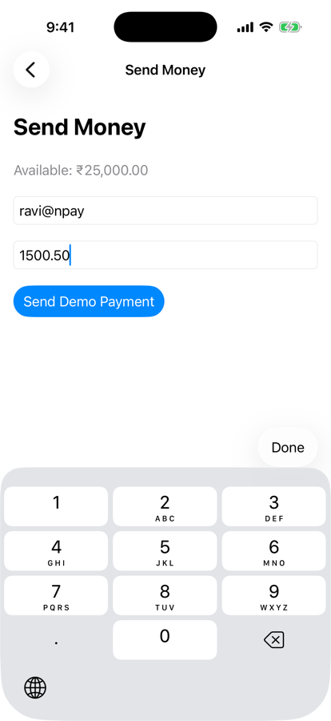
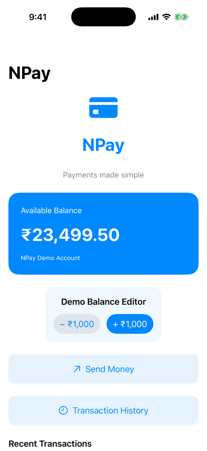
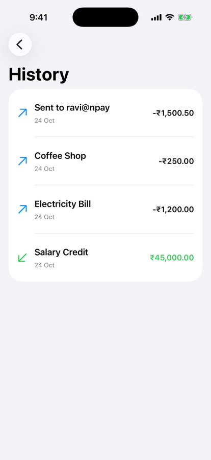

Part 1 · Our NPay milestone (section 1)
A step no user taps
- No
NavigationLinkto activate - How does SwiftUI navigate in response to application logic?
- Balance, transactions, editor, form: unchanged
- Only the navigation changes

3.1: an alert

3.2: a success screen
Part 3 · Navigation-path explorer (sections 5, 13)
Push appends; pop removes; home clears
| Action | New path (onChange, simulator) |
|---|---|
| Open Payment | [.payment] |
| Show success | [.payment, .success(transactionID: 6F1C2A9E-…)] |
Home (removeAll) | [] |
| Payment, then History (two appends) | [.payment, .history]: Depth 2 |
| System Back | [.payment]: Depth 1 |
| Pop (guarded) | [] |
| Pop at root (guarded) | no change |
Printed by .onChange(of: path); module prefix NPay.NPayRoute omitted.

After two appends
Part 4 · A value with no destination (section 6, authored experiment)
Unregistered type: a warning, not a screen
- A path holding
NPayRoute,42and"ravi@npay" - Destinations registered for
NPayRouteandIntonly
count: 3
top: String, no destination → yellow warning symbol
Back → count 2: "Int destination #42"
- Every value type you push needs a
navigationDestination - Register it inside the stack, on the root content

No String destination
Part 6 · Build the Payment Success screen (section 9)
It receives an ID and a way home
struct PaymentSuccessScreen: View {
let transactionID: UUID
let onDone: () -> Void
var body: some View {
VStack(spacing: 24) {
Image(systemName: "checkmark.circle.fill")
.font(.system(size: 72))
.foregroundStyle(.green)
Text("Payment Recorded")
.font(.title.bold())
Text("Your demo payment was successful.")
.foregroundStyle(.secondary)
Text(transactionID.uuidString)
.font(.caption2.monospaced())
.foregroundStyle(.secondary)
.multilineTextAlignment(.center)
Button("Back to Dashboard") { onDone() }
.buttonStyle(.borderedProminent)
}
.padding()
.navigationTitle("Payment Success")
.navigationBarBackButtonHidden()
}
}transactionIDonDone: a closure
- The navigation path
- The parent navigates
- Hidden by a modifier
- Leave with Back to Dashboard
In the simulator
Part 6 · Run the route-based flow (practical test)
₹1,500.50 to ravi@npay, step by step
tap Send Money
[NPay.NPayRoute.payment]
tap Send Demo Payment
[….payment, ….success(transactionID:
DFE60279-…)]
tap Back to Dashboard
[]
tap Transaction History
[NPay.NPayRoute.history]

1500.50 typed
Success, by code

₹23,499.50

History
Part 7 · Behind the scenes: navigation is state (section 12)
UI = f(State), and now navigation too
UI = f(State) → Visible destination = f(path)
- SwiftUI updates the navigation presentation
- The app pushes no view controller; it changes declarative state
- SwiftUI runs the transition
@State private var path: [NPayRoute] = [.payment, .history]
launch → History on screen, Payment below it
Back → New path: [NPay.NPayRoute.payment]

Launched deep
Part 8 · A router of our own (Q&A 2–3)
The path, moved into an object
@MainActor
@Observable
final class NPayRouter {
var path: [NPayRoute] = []
func push(_ route: NPayRoute) {
path.append(route)
}
func pop() {
guard !path.isEmpty else { return }
path.removeLast()
}
func popToRoot() {
path.removeAll()
}
}Observation framework: iOS 17+.
@State private var router = NPayRouter()
var body: some View {
@Bindable var router = router
NavigationStack(path: $router.path) {
VStack(spacing: 20) {
Button("Send Money") { router.push(.payment) }
Button("History") { router.push(.history) }
}
.navigationDestination(for: NPayRoute.self) { route in
switch route {
case .payment: Text("Payment Screen")
case .history: Text("History Screen")
case .success(let id):
Text("Payment Success: \(id.uuidString)")
}
}
}
}
After Send Money